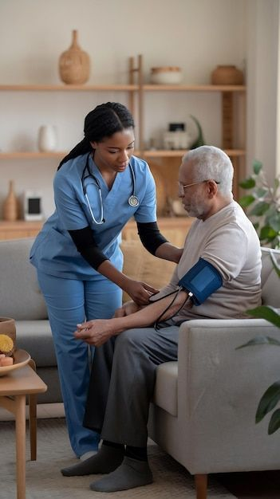
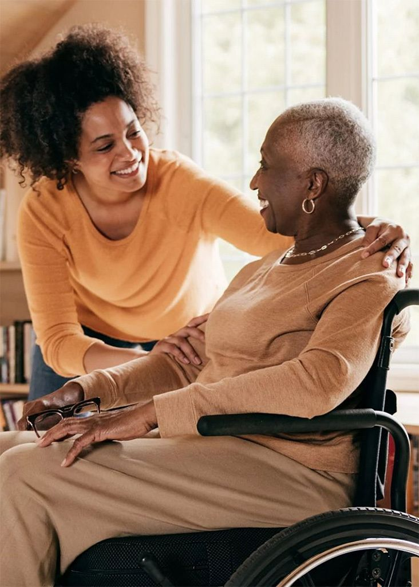

Support to the Elderly and Weak Initiative
Aging with dignity, care and hope.
SEWI is a non-governmental organization committed to improving the quality of life for elderly individuals and vulnerable populations through care, support services, advocacy and community action.
Compassion in action
Restoring dignity and belonging.
We believe every elder deserves respect, security and the opportunity to age with grace.
SEWI works to ensure no elderly person or vulnerable individual is left behind, forgotten or forced to endure hardship in silence.
Based in Nigeria, SEWI responds to the growing realities older adults face: poverty, limited access to healthcare, chronic illness, social isolation, neglect and inadequate support systems. Traditional family caregiving is often strained by economic pressure, migration and modern lifestyles.
That is why SEWI provides practical, community-centered solutions that improve wellbeing, restore dignity and strengthen the social fabric around older people and vulnerable households.
Elderly Care
Medical Outreach
Advocacy

A community that cares
What we do
Explore servicesElderly Care and Support
Home-based support, daily living assistance, meal provision and safe shelter options for older adults who need practical help.
Medical Outreach Programs
Health screenings, medication support, referral pathways and health education to improve access to care for seniors.
Counselling and Emotional Support
Companionship, counselling and community engagement that reduce isolation and support mental wellbeing.
Food and Welfare Distribution
Nutritious food, household essentials and relief support for vulnerable elders facing hunger and hardship.
Community Development Initiatives
Awareness campaigns, volunteer engagement and intergenerational programs that strengthen communal care.
Advocacy and Awareness
We promote elder rights, improved care systems and stronger social protection for vulnerable older people.
Our impact
View gallery
In Clients Words
Explore services"As a senior citizen, I never thought I'd find a supportive community. This NGO has truly transformed my life, offering companionship and care that has made my golden years truly golden!"
Dimeke, Onitsha, Anambra State
Senior
"I have had the privilege of volunteering with this NGO, and it has been a life changing experience. The genuine care and love they pour into the lives of the elderly is inspiring."
Jennifer Uzoma
Senior
"I never imagined my retirement years could be this fulfilling. Thanks to this NGO. I've found new friends, purpose, and a renewed zest for life!"
Ihuoma Okorie
Senior
Latest stories
See all
Improving quality of life for older adults
Practical care and emotional support help seniors feel safe, dignified and truly supported.
Read more
Why companionship matters in aging
Meaningful contact, respect and listening can reduce loneliness and restore hope.
Read more
Building a stronger safety net for elders
SEWI continues to push for elder rights, healthcare access and inclusive social support.
Read more